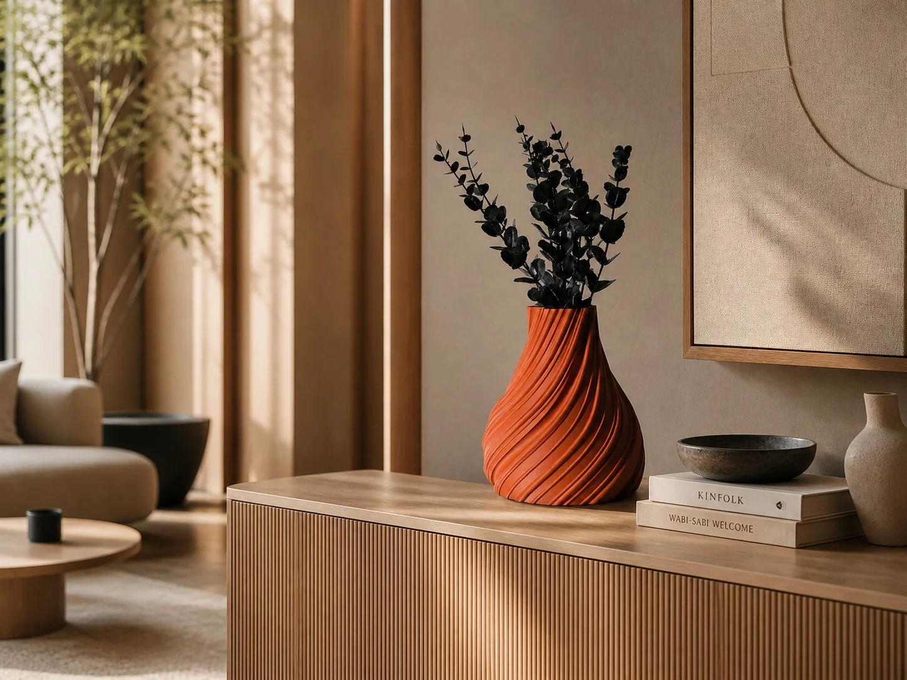
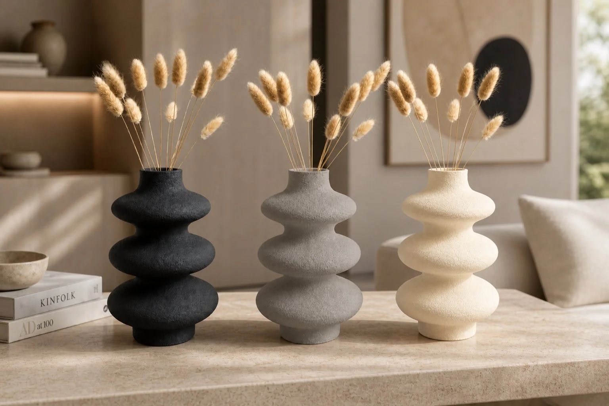
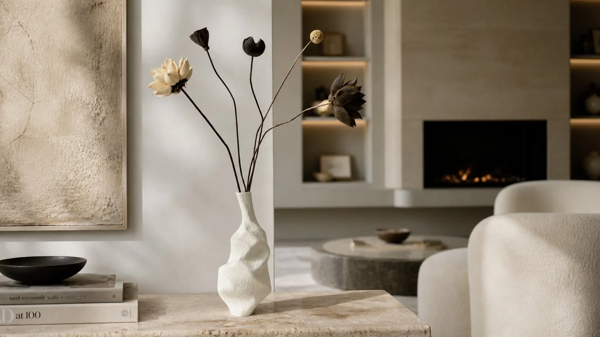
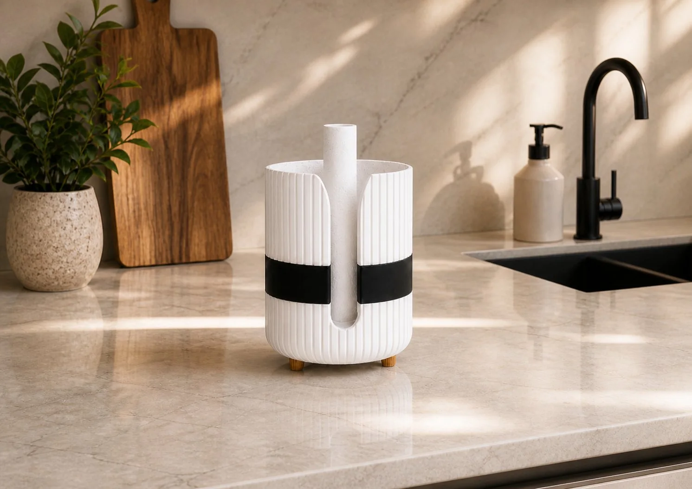
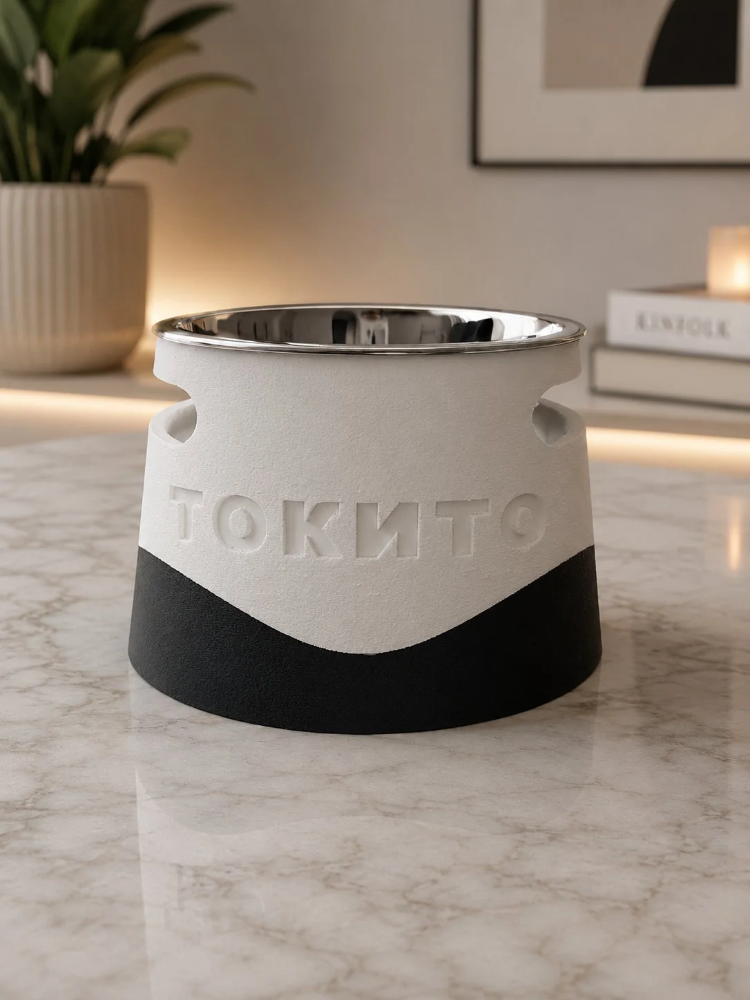
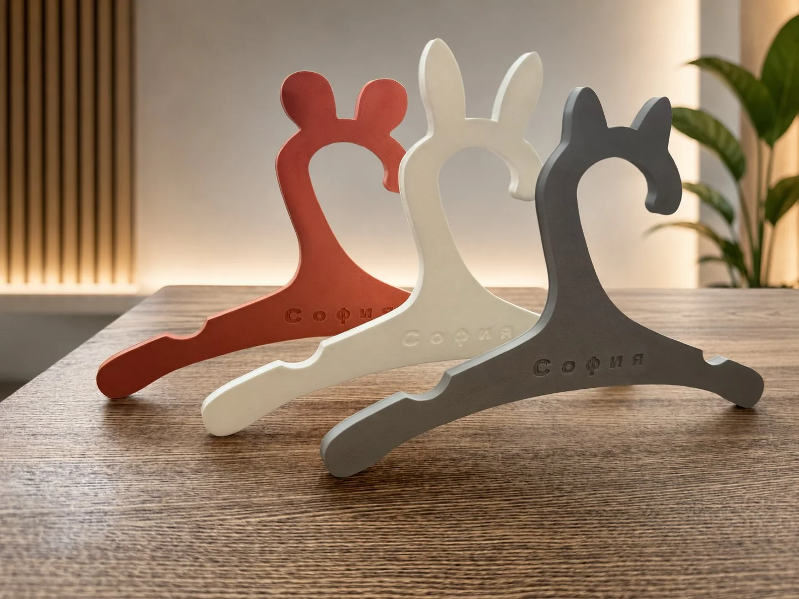

Предметы с индивидуальностью
Форма.
Фактура.
Характер.
I'M ATHENA — авторская дизайнерская лаборатория современных предметов для интерьера, дома и брендов.
Знакомство с объектами
Актуальный объект
Для особенного времени дома
RAMADAN
Месяц и звезда
Декоративная композиция для дома в период Рамадана. Ажурная геометрия, матовая поверхность, подвесы и текстильные кисти.
Два цвета: Deep Green · Terracotta
- Месяц
- 22,4 × 24,9 см
- Звезда
- 21,1 × 21,3 см
Регулируемый подвес до 150 см. Нужна другая длина — укажите при заказе.
1 200 ₽ за комплект
ЗаказатьДоставка рассчитывается отдельно.
Для заказа напишите в Telegram и укажите цвет.
Selected objects
Предметы.
Их собственный язык.
Ритм линий, мягкий рельеф и выразительный силуэт. Объекты, которые становятся частью пространства и повседневной жизни.

Скульптурные формы
Мини-вазы и декор для интерьерных композиций.

Свет и поверхность
Фактурный декор. Форма раскрывается в деталях.
В повседневном
У красоты
есть функция.
Держатели, подставки и персональные предметы — под конкретное место и привычный ритуал.
Обсудить свою идею

Авторский объект
FACES
Авторское модульное панно
Лицо как форма.
Стена как пространство
для индивидуальности.
For brands
Индивидуальность
в каждой детали.
Фирменные объекты для брендов одежды и шоурумов: вешалки, предметы для выкладки, реквизит и малые партии.
Фирменные вешалки
Форма, надпись, логотип и цвет под стиль бренда. Сначала — тестовый образец, затем — партия.
Предмет с цифровым продолжением
NFC-визитка или метка открывает по касанию телефона сайт, Telegram, каталог или контактную карточку. При необходимости — мини-страница с фотографиями и кнопками связи.
Как сохранить актуальность NFC-ссылки
В метку можно записать постоянную ссылку на страницу. Содержание этой страницы обновляется без перезаписи метки. Сценарий перехода и совместимость проверяются на тестовом образце.
Индивидуальный расчёт
Обсудить проект для бренда
Личная деталь.
Именные вешалки для детской одежды, подарков и коллекций. Имя, цвет и форма — часть вашего замысла.
От замысла к предмету
Ваша идея.
Наш поиск формы.
Для конкретного интерьера, личного подарка или бренда. Обсудим контекст, форму, цвет и задачу — и найдём решение, которое можно воплотить.
Индивидуальный расчёт
Обсудить проект- 01
Идея
Ваш замысел, референсы, пространство и пожелания.
- 02
Форма
Цифровое проектирование, прототип и проверка деталей.
- 03
Предмет
Согласование решения, изготовление и проверка перед передачей.
О технологии и поверхности
Цифровое производство и 3D-печать — инструменты лаборатории. На поверхности могут быть видны слои и шов: это особенности технологии. Фактуру, цвет и возможную постобработку обсуждаем под задачу; конструкцию и удобство проверяем на прототипе.
Заказ, упаковка и доставка
Готовые предметы можно заказать через контакты сайта. Доставку обсудим при заказе. Для индивидуального проекта пришлите идею или референс, размеры и количество. Стоимость и срок согласуем заранее. Упаковку подберём по размеру и хрупкости объекта; дополнительную подарочную упаковку обсудим отдельно.
Продолжим знакомство
Предмет начинается
с разговора.
Выбрать готовый объект или обсудить индивидуальный проект — напишите мне.